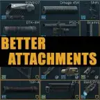

BETTER ATTACHMENTS
- Downloads
- 23,578
- Favourites
- 18
- Mod lists
- 19
All gun attachments are changed and fully configurable. This includes:
-
Stocks
-
Foregrips
-
Sights (all types) - Iron Sights, Collimator, Compact Collimator, Optical Sights, Scopes etc.
-
Muzzles (all types) - Compensator, Flashhider, Suppressors etc.
-
Flashlights
-
Lasers
-
Handguards
-
Pistol Grips
Total number of attachments changed: 1094
Silencers and Flashhiders are buffed. Which makes Guns OP with Perfect Ergonomics. To avoid this please use Config file to balance it. IMO -> OP AIs need OP Guns.
Installations
Copy the SPT folder into your SP THE CITY Root Folder. The BetterAttachments Folder will automatically Placed in <SPT-ROOT>/SPT/user/mods
Improvements:
- Ergonomics improved by ~50%
- Recoil improved by ~25%
Everything provided in the mod is configurable. Just update ergonomics_updated and recoil_updated value inside the config file whatever you want.
Version
4.0.13
Updated to SPT 4.0.6